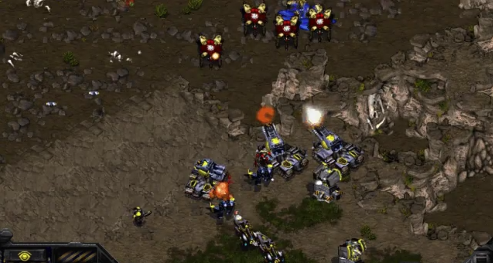
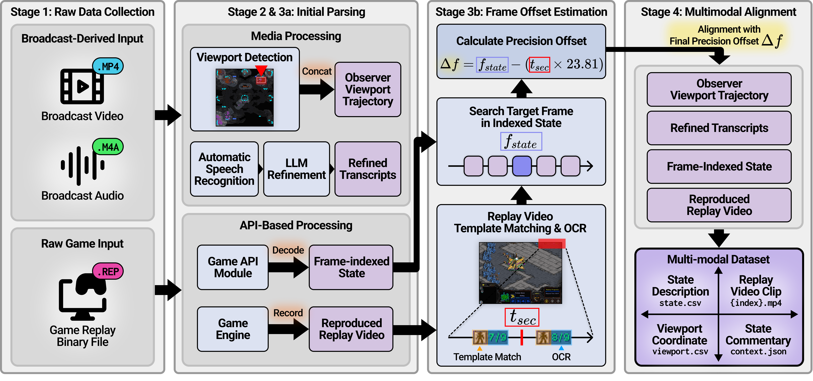

Replay-rendered observer view at frame 15,393
Commentary Alignment and State Tracking for Esports Research: utterance-aligned observer-view clips, observer-visible structured state, and quality-controlled professional commentary.
Many multimedia language-generation tasks require grounding in both visible content and evolving, partially observable structured states. Professional esports commentary exemplifies this: in StarCraft: Brood War, meaningful commentary relies on short-term temporal context, observer camera motion, and observer-visible unit configurations. We introduce CASTER (Commentary Alignment and State Tracking for Esports Research), a multimodal dataset for observation-grounded commentary in partially observable environments. It aligns utterance-level observer-view clips, structured state from replay logs and viewport traces, and quality-controlled professional commentary.
CASTER comprises 239 matches and 28,734 aligned clip-state-commentary instances with strict game-level splits. We define two tasks for reproducible evaluation: (1) Clip-to-Observation, predicting structured observer-state events from clips, and (2) Clip+Observation-to-Commentary, generating commentary conditioned on synchronized visual and structured inputs. Results indicate that recovering structured state from clips alone remains challenging, while Task 2 establishes reference points for commentary generation under clip-only, observation-only, and multimodal conditioning.


Replay-rendered observer view at frame 15,393
| Frame | Player | Unit Name (ID) | X, Y | HP | ... |
|---|---|---|---|---|---|
| 15393 | 2 | Terran_Marine(223) | 3181, 1536 | 40 | |
| 15393 | 2 | Terran_Siege_Tank_Siege(227) | 3440, 1456 | 36 | |
| 15393 | 2 | Terran_SCV(232) | 3339, 1487 | 60 | |
| 15393 | 2 | Terran_Siege_Tank_Siege(293) | 3368, 1460 | 70 | |
| 15393 | 2 | Terran_Siege_Tank_Tank(321) | 3266, 1490 | 60 | |
| 15393 | 2 | Terran_Missile_Turret(323) | 3456, 1600 | 200 | |
| 15393 | 2 | Terran_Missile_Turret(350) | 3424, 1504 | 200 | |
| 15393 | 1 | Protoss_Dragoon(329) | 3424, 1280 | 100 | |
| 15393 | 1 | Protoss_Dragoon(330) | 3274, 1320 | 100 | |
| ... | ... | ... | ... | ... | ... |
Synchronized structured state (state.csv) at frame 15,393
{
"seg_index": 86,
"clip_path": "match_124/clip/match_124_086",
"speech": "The shuttle gets taken down instantly! Meanwhile, the Dragoons are trying to find an angle, firing from the low ground up into [PLAYER_1]'s position.",
"speech_tag": "ACTION_CALL",
"time": "15325~15421",
"events": [
{
"frames": "15325~15421",
"viewport": "[3002,1301]",
"units": {
"[PLAYER_1]": [
"Marine*1 [3181,1536]",
"Missile_Turret*3 [3306,1621]",
"SCV*2 [3311,1474]]->[3315,1508]",
"Siege_Tank_Siege_Mode*2 [3404,1458]",
"Siege_Tank_Tank_Mode*2 [3114,1533]]->[3129,1611]",
"Vulture*2 [3357,1548]]->[3335,1568]",
"Vulture_Spider_Mine*2 [3094,1382]"
],
"[PLAYER_2]": [
"Dragoon*4 [3390,1275]]->[3347,1295]",
"Observer*1 [3161,1256]",
"Zealot*2 [3313,1481]]->[3316,1483]"
]
}
}
]
}Aligned clip-level record (context.json)
Race picks
Matchup distribution
| Dataset statistics | |
|---|---|
| Matches | 239 |
| Clips / utterances | 28,734 |
| Avg. clip duration | 7.07 s |
| Median clip duration | 6.30 s |
| Total clip hours | 56.43 |
| Avg. utterance length (tokens) | 29.5 |
| Avg. utterance length (words) | 23.5 |
| Video resolution | 640 × 480 |
| Frame rate (FPS) | 23.81 |
| Train / Validation / Test matches | 205 / 17 / 17 |
| Quality control (sampled audit N=6000) | |
| Temporal alignment within ± 5 frames | 95% (5700/6000) |
| Viewport acceptable (≤ 30 px error) | 95% (5700/6000) |
| Refined commentary judged meaning-preserving | 99% (5940/6000) |
| Not retained after final QC | 2% (120/6000) |
| Event | Frames | Viewport | Player | Units |
|---|
We evaluate CASTER in a zero-shot setting on utterance-aligned clips using replay-rendered video only at inference time. The benchmark is designed to measure both structured observer-state recovery and grounded commentary generation under realistic off-the-shelf prompting conditions.
Given a short observer-view clip V, the model predicts the structured observation sequence O defined by the released event schema. Each event contains a replay-frame span, an observer viewport, and visible units grouped by player with approximate counts and coordinates.
We evaluate six complementary metrics: Format Accuracy, Unit F1, Count MAE, Viewport L2 Distance, Unit L2 Distance, and Temporal IoU after conversion to clip-relative frame offsets.
Given a short clip and its synchronized observer-grounded observation record, the model generates commentary under Text-Only, Video-Only, and Multimodal conditioning. We report GPT-4o baselines for overall performance and per-tag behavior.
Evaluation includes reference-based metrics BLEU-4 (B4), ROUGE-L (RL), and BERTScore (BS), together with LLM-based judgments of Tag Consistency (TC), Strategic Correctness (SC), and Caster Naturalness (CN).
Task 1: Higher-is-better metrics
Format Acc
Unit F1
Temporal IoU
Task 1: Lower-is-better metrics
Count MAE
VP L2 Dist
Unit L2 Dist
Task 2: Higher-is-better metrics
BLEU-4
ROUGE-L
BERTScore
Tag Consistency
Strategic Correctness
Caster Naturalness
Overall GPT-4o modality comparison across reference-based and LLM-based Task 2 metrics. Higher is better for all six measures.
Task 1 (Clip-to-Observation) results. Format Accuracy measures JSON-schema compliance; Unit F1 and Count MAE evaluate player-aware unit recovery; VP L2 Dist and Unit L2 Dist report localization error in raw replay-map coordinates; Temporal IoU measures clip-relative temporal overlap after frame-offset conversion.
| Method | Format Acc (%) | Unit F1 | Count MAE | VP L2 Dist | Unit L2 Dist | Temporal IoU |
|---|---|---|---|---|---|---|
| qwen3.5-397b-a17b | 96.07 | 0.133 | 1.87 | 742.01 | 403.03 | 0.663 |
| mimo-v2-omni | 95.06 | 0.132 | 1.85 | 749.12 | 489.33 | 0.632 |
| GPT-4o | 99.36 | 0.170 | 1.55 | 739.36 | 394.67 | 0.655 |
| Gemini 3.1 Pro | 99.42 | 0.202 | 1.04 | 676.29 | 325.83 | 0.732 |
Task 2 (Clip+Observation-to-Commentary) results. Performance of GPT-4o across conditioning settings and discourse tags. B4: BLEU-4, RL: ROUGE-L, BS: BERTScore, TC: Tag Consistency, SC: Strategic Correctness, CN: Caster Naturalness. Higher is better.
| Tag | Multimodal | Video-Only | Text-Only | |||||||||||||||
|---|---|---|---|---|---|---|---|---|---|---|---|---|---|---|---|---|---|---|
| B4 | RL | BS | TC | SC | CN | B4 | RL | BS | TC | SC | CN | B4 | RL | BS | TC | SC | CN | |